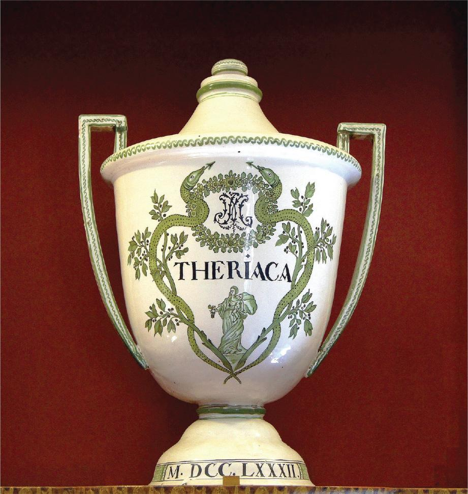
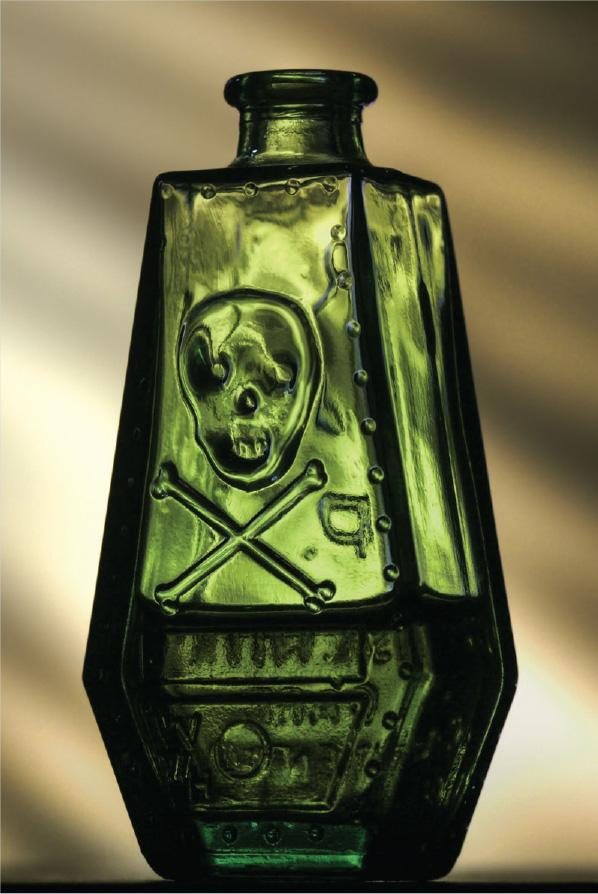
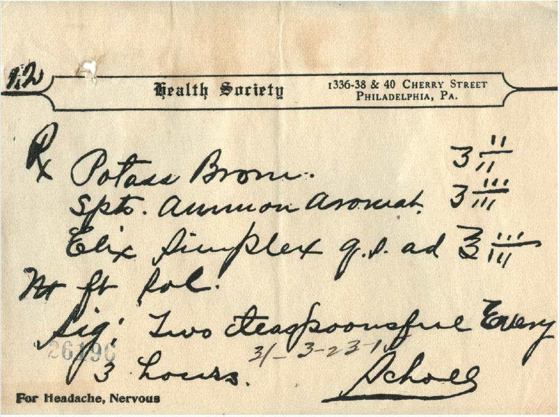
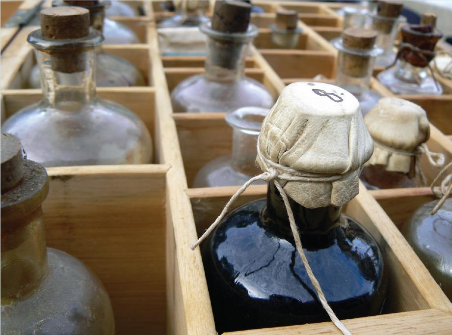
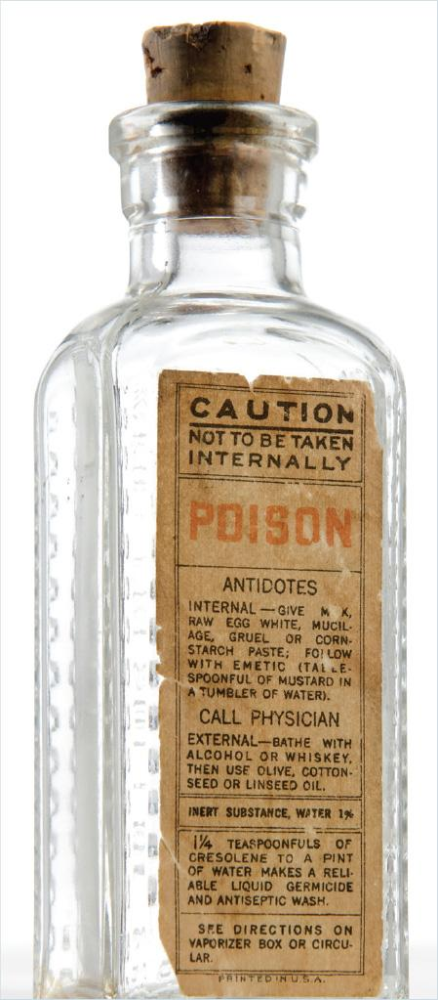
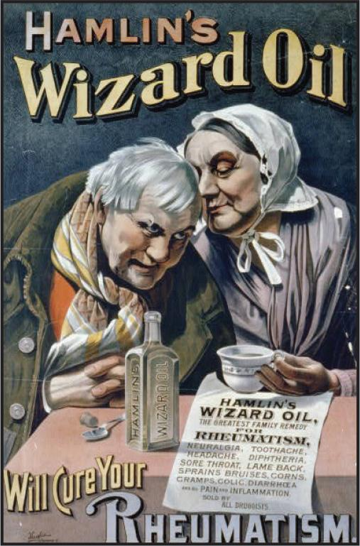
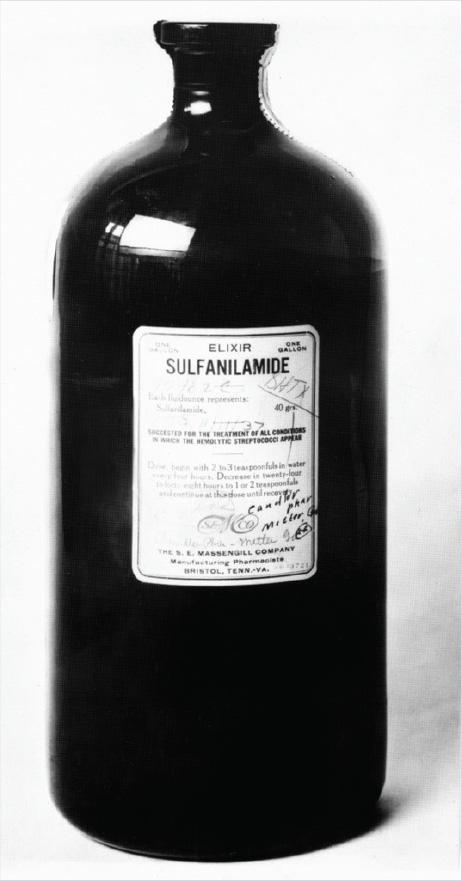
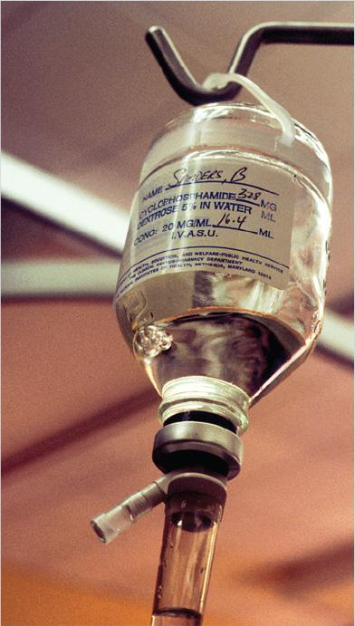

2.1 Historical Introduction
Early civilizations in Egypt and Mesopotamia (an area that now constitutes Iraq, Kuwait; and parts of Saudi Arabia, Syria, and Turkey) believed that illness and disease resulted from sin, demonic attack, or disfavor among the gods. Inhabitants who fell ill were treated by a variety of community members in their rural villages, including shamans, healers, alchemists, herbalists, and apothecaries. Remedies typically were formulated from native flora and fauna in addition to local minerals. Evidence of these plant-, animal-, and mineral-based recipes have been uncovered in archaeological artifacts, such as the Ebers papyrus and Hearst papyrus, and in temple hieroglyphics. These practitioners experimented with substances to concoct medicinal recipes and then used a trial-and-error method to determine which remedies worked and which did not. Most treatments were accompanied by the recitation of magical spells and supernatural incantations.
Medicinal Recipes from Flora and Fauna
Because early practitioners lacked knowledge of the properties of these medicinal compounds as well as an understanding of the anatomy and physiology of the human body, their treatments often resulted in more harm than good. For example, plants such as opium, hemlock, deadly nightshade, aconite, mandrake, and henbane were used to relieve pain but could be lethal, depending on which plant components were used and in what quantities.
Today, several of these plants continue to be used in Eastern medicine, Western medicine, and homeopathic remedies. For example, opium is the primary source of most natural narcotics and is used to manage moderate-to-severe pain. Henbane, used as an anesthetic by early inhabitants, contains atropine and scopolamine, two substances used to inhibit the central nervous system and peripheral nervous system. Aconite is a homeopathic remedy used to treat headache, painful joints, and nerve pain. The accurate dosing of these medications by modern-day practitioners avoids the toxic effects of these plant-based cures.
Ancient recipes also included the use of potentially poisonous animal substances such as the feces of a donkey, dog, fly, and gazelle. Feces were used to treat ailments, provide contraception, and ward off evil spirits. In 4th century China, a practitioner named Ge Hong provided “yellow soup” to his patients suffering from intestinal ailments such as diarrhea. This mixture, given orally, contained dried feces from a healthy person. Hong’s cure was to replace the bad bacteria in the gut with good bacteria.
This concept of administering beneficial bacteria has had renewed interest in the medical community in recent years as the number of fatalities due to Clostridium difficile (C. diff) infection has soared. Today, some surgeons have performed fecal transplants for patients who have stubborn C. diff infections or other types of intestinal conditions that are not responding to antibiotic therapies. In a fecal transplant, donor stool containing good gut bacteria is delivered to the gastrointestinal tract of a patient to replace the bad bacteria that is flourishing in the stomach and intestines.
The venom of snakes, scorpions, and bees was another common ingredient in ancient medicine. Snake venom, which has the capacity to paralyze the nervous system and stop blood from clotting, was used by ancient Greeks and Romans to treat leprosy, smallpox, and fever. One venomous compound, known as theriac, was concocted by King Mithridates of Pontus (now Iran) from snake venom and other ingredients such as opium, myrrh, saffron, ginger, castor oil, and cinnamon. Primarily used as an antidote for snakebite, theriac was compounded by apothecaries well into the 18th century and was touted as a cure-all for many disorders. Today, viper venom is a key ingredient in the anticoagulant tirofabin, and a synthetic version of a substance found in the venom of a Gila monster is used in exenatide, a medication used to treat diabetes.

Minerals such as mercury, a substance that has deadly effects on the cardiovascular and central nervous systems of humans, was extracted from cinnabar and used to treat infections. Other toxic minerals used by early practitioners to compound treatments included arsenic, lead, antimony, and copper.
Today, ingestion or exposure to these heavy metals is linked to a number of significant health issues, and toxic accumulation can lead to death. To treat mercury, arsenic, and lead poisonings, physicians prescribe chelation therapy. This type of therapy uses specific drugs, known as chelators, to bind metals that have built up in a patient’s bloodstream. Two commonly used chelators are succimer (Chemet) and dimercaprol (Bal in Oil). Physicians must closely monitor a patient receiving chelation therapy for any adverse effects.
The medicinal use of toxic plants, animal substances, and minerals also led to the use of poisons for nefarious activity. In fact, early Egyptians discovered that crushed peach seeds from the fruit of the Prunus persica tree contained deadly substances now identified as amygdalin and cyanogenic glycoside, also known as cyanide. Ingestion of these seeds led to respiratory failure. Consequently, the “penalty of the peach” was used to execute criminals in these ancient civilizations and later became a commonplace practice among early Greek and Roman civilizations.
Poisons as Remedies
By the Middle Ages, medical practitioners continued to follow a trial-and-error approach to treating disorders. However, these treatments became more invasive. One common treatment was bloodletting, or the draining of “bad blood” from an ill individual to allow the healing process to begin. Practitioners would use a lancet to pierce the individual’s vein and, subsequently, drain the blood into a basin or other container. This procedure was used to treat ailments ranging from a toothache and the common cold to anemia and even cancer.
Other rudimentary surgical interventions used by practitioners at the time ranged from boring holes in the skull to relieve pressure, a method known as trepanning, to amputating limbs to stop the spread of infection. To render the patient unconscious during these surgical procedures, practitioners had their patients ingest an herbal concoction called dwale. This elixir was often comprised of ingredients such as alcohol, goat bile, hemlock, henbane, bryony, and opium. Some patients were rendered unconscious or delirious by the potent mixture, whereas others died from the elixir’s potentially toxic ingredients.
The research and observations of Swiss physician and alchemist Paracelsus (1493–1541) paved the way for understanding the distinction between a therapeutic dose and a toxic level of a medicinal substance. He was the first physician to acknowledge that any drug substance has the potential to harm a patient by acting like a poison: “What is there that is not poison? All things are poison and nothing is without poison. Solely the dose determines that a thing is not a poison.” Paracelsus’s belief that the correct dose of a medicinal substance separates a poison from a remedy established the relationship between toxicity and pharmacology. Paracelsus also observed that a drug substance targets and binds to a specific site, causing a chemical interaction that results in a change. His research laid the foundation for an innovative drug therapy approach used today by many physicians: targeted drug delivery.
The research of Paracelsus also laid the foundation for the dose-response relationship, a modern-day concept that established the parameters for a substance’s therapeutic range (no adverse effects) and toxic concentration. This concept helps prescribers and other healthcare personnel involved in the medication-use process to understand the importance of appropriate medication dosing for patients. With 80% of adverse drug reactions related to a patient’s drug dose, the importance of “right strength”—one of the Six “Rights” of Correct Drug Administration—is critical to the prevention of a medication error.
During the Renaissance, apothecaries established physic gardens of medicinal flowers and herbs that were collected from different parts of Europe and Asia. These gardens were similar to scientific laboratories where plants were cultivated and studied for their use in the treatment of illness and disease. Some of these plants were poisonous but had medicinal value, such as foxglove, rosy periwinkle, opium, and belladonna. Once cultivated, the plants were often hung to dry, milked for extract, or ground into powders. Because apothecaries had no formal medical training, they experimented with finding the medicinal quantity that was beneficial, not toxic, to a patient. Their insights into the treatment of medical disorders were highly valued by local residents. In fact, despite the establishment of formal medical training programs during this period, individuals put more faith in traditional cures than in science-based medicines.
Early Medication Safety Practices
Beginning in the 18th century, apothecaries stored toxic plant substances in colored-glass bottles rather than in clear-glass containers. The bottles were typically cobalt blue, black, or dark green and often were embossed with a skull and crossbones or the word “poison.” Other bottles containing poisons had a distinct shape, such as a coffin. In an apothecary shop filled with hundreds of remedies, these bottle characteristics provided a safeguard for practitioners as they reached for substances during their compounding procedures. Apothecaries during this period recognized the importance of safe storage, handling, and selection of potentially toxic medications.

A similar safety practice continues today with the implementation of labeling standards for high-alert medications, or medications that have a heightened risk of causing significant harm if used incorrectly. These standards include tall-man lettering for look-alike and sound-alike drugs as well as the use of auxiliary labels that alert pharmacy personnel to a high-alert medication. These safety measures aid the selection of the “right drug,” one of the Six “Rights” of Correct Drug Administration, when filling a prescription or a medication order. The selection of an incorrect drug from a pharmacy’s inventory is a common cause of a medication error. (To learn more about the importance of medication labeling to patient safety, refer to Chapter 6.)
As mentioned previously, apothecaries used a trial-and-error method to determine the amount of each ingredient in a remedy. The amount of an ingredient made the difference between a therapeutic strength and a toxic strength of a medication. To standardize ingredient amounts, these early pharmacists adopted a system of measurement that was based on the weight system developed by the Romans. This system, known as the apothecary system of measurement, spread throughout Europe and eventually was implemented in the United States.
The apothecary system was based on the following measurements: grain (equal to 65 milligrams), scruple (equal to 20 grains or approximately 1.3 grams), dram (equal to 3 scruples or approximately 4 milliliters), ounce (equal to 8 drams), and pound (equal to 12 ounces). The use of a system of weights and measures helped to standardize the amount of each ingredient during the compounding of medication, which reflected an awareness by apothecaries that the amount or strength of each ingredient affected a patient’s outcome.
Today, the apothecary system of measurement is all but obsolete. Pharmacy personnel now use the metric system of measurement to standardize dose calculations and to determine the amount of ingredients used in the compounding of medications. As mentioned earlier, the importance of using the “right strength” of a medication, one of the Six “Rights” of Correct Drug Administration, is critical to the prevention of a medication error. Consequently, dose calculations are verified by several pharmacy staff members prior to the preparation of medications for patient dispensing. (For additional information on the apothecary and metric systems of measurement, see Chapter 7.)

Apothecaries recorded their compounding recipes in Latin, a common language among European countries, in a logbook they maintained in their shops. They exercised care when writing the recipes to avoid any misunderstanding. For example, apothecaries recognized that the symbol for dram (3) resembled the Arabic number 3. For that reason, if a recipe called for 3 drams, they would record 3 iii. These early practitioners understood the importance of accurately recording or updating medicinal recipes to ensure accuracy.
Today, healthcare personnel are educated about the importance of using a standardized system of medical and pharmacy abbreviations and symbols to ensure accuracy in communication during the medication-filling process. This standardized system provides another safety check for dispensing the “right strength” of a drug and, consequently, preventing a medication error. (To learn more about the use of standardized medical and pharmacy abbreviations and symbols, see Chapter 6.)
In the late 18th century, as the role of apothecaries changed with the emergence of trained physicians prescribing medications, so did the medication-filling process. Physicians would write a prescription for a patient, record the prescription in a logbook, and send the prescription to an apothecary for filling. The apothecary would also record the prescription in a logbook and attach a prescription label to the medication bottle. This label was made of wood, parchment, or leather and tied to the neck of the bottle using a string.
By the 19th century, the labeling process changed. Apothecary shops became pharmacies and were now run by educated and trained pharmacists who printed their own prescription labels or who ordered labels from the catalogs of local printers or engravers. These labels reflected a movement toward the standardization of the information on a medication container label: name of patient, date of prescription, directions for use, name of the prescriber, and name of the pharmacy.
Pharmacists also recognized, based on their expanded knowledge of anatomy and physiology, that medication labels needed to include how to administer the drug (route of administration) and when to administer the drug (dosing intervals). For example, labels for liquid medications indicated how many spoonfuls a patient should take, and labels for pill or tablet containers provided the quantity a patient should ingest.
In addition, pharmacists saw the need to affix auxiliary labels, or warning labels, to their medication containers. In fact, the American Pharmaceutical Association, founded in 1852, passed a resolution at their second annual meeting: “All packages or bottles [of poisonous substances] shall be distinctly labeled with the word ‘Poison’ or a death’s head symbol, conspicuously printed.” Other auxiliary labels, such as “Use with Caution” and “For External Use Only,” were commonly affixed to medication containers. These labels provided warnings to consumers of potentially dangerous outcomes if medications were not used properly.

Today, the practice of affixing standardized medication labels and auxiliary labels to containers helps to ensure that the “right patient” takes medication by the “right route” at the “right time.” These “rights,” part of the Six “Rights” of Correct Drug Administration, ensure the safe administration of medication and prevent medication errors.

Legislation and Regulation Targeting Medication Safety
By the end of the 19th century, medications that were formerly compounded by pharmacists were now manufactured. Pills, tablets, liquids, syrups, ointments, and vaccines were formulated in unregulated factories in large quantities and without any quality-control standards for ingredients or for manufacturing practices. Many of these factories produced miracle drugs and bogus vaccines that offered little, if any, effect on illness or disease. Profit-driven individuals also saw the opportunity to concoct their own quack medicines and hawk them as miracle drugs for curing a variety of disorders. These drugs had little medicinal value and large amounts of alcohol or opium derivatives mixed with herbs.
As the US population grew in the 20th century, medical and pharmacy professionals recognized the need for mass production of drugs and drug components. However, they also became increasingly aware of the terrible human toll from the use of bogus and substandard medications that were produced from unregulated factories or sold through fraudulent practices. In response to reports of infections, injuries, or fatalities from the use of these medications, US lawmakers set standards for the drug industry by passing the Pure Food & Drugs Act in 1906. This act established federal inspections of food and drug industries; forbid the manufacture, sale, and transportation of adulterated food products and poisonous patent medicines; and required accurate labeling of medications. (For more information on the Pure Food & Drugs Act, refer to Chapter 3.)

Unfortunately, this federal legislation was limited in its power to regulate and enforce quality standards in these industries. Many factories continued to produce substandard or unsafe medications, which resulted in many unreported adverse drug events or fatalities among consumers.
Poisonous patent medications were easily accessed by consumers who were uninformed about their potential dangers. One example of a poisonous patent medication was mercury bichloride, a tablet that was used to treat syphilis at the beginning of the 20th century. An individual who ingested a high-enough dose of mercury bichloride (three tablets for an adult) had the potential for dire consequences: internal bleeding of the digestive tract; kidney damage; and, possibly, death. Because this dangerous medication could be purchased at a pharmacy without a prescription, several consumers died from drug toxicity.
In response to continued infections, injuries, and fatalities associated with mercury bichloride, the American Journal of Pharmacy recommended that manufacturers change the shape and color of the tablets to a blue coffin to indicate their toxic properties. Some manufacturers complied and created coffin-shaped molds for these tablets. Others did not. Like other potentially poisonous medications during this time, there was sporadic documentation and tracking of physical harm related to a specific medication. It would take another catastrophic event to highlight the need for medication safety standards and, consequently, force lawmakers to enact legislation to protect consumers from potentially toxic medications.
In 1937, more than 100 individuals were poisoned by an antimicrobial drug called Elixir Sulfanilamide. The raspberry-flavored drug was formulated using the solvent diethylene glycol, a poisonous compound used in resins and dyes. Although many individuals in the medical community knew of the danger of this compound, the chief chemist at S.E. Massengill Company was unaware of diethylene glycol’s toxic properties and subsequently promoted the product without testing it on animals.

In response to public outcry from this mass poisoning, the US Congress passed the Federal Food, Drug, and Cosmetic (FD&C) Act in 1938. This legislation greatly increased the strength of regulating bodies and required animal testing on all new drugs to prove their safety prior to sale. The FD&C Act also established the US Food and Drug Administration (FDA), which is the federal agency responsible for the safety, efficacy, and security of pharmaceuticals in the United States. Through the regulations defined in the FD&C Act, the FDA enforces strict regulations for drug manufacturers that mandate extensive requirements for the development, manufacturing, testing, marketing, and sales of over-the-counter and prescription drugs. However, the FD&C Act did not regulate compounded medications, including compounded sterile preparations (CSPs).
In 1941, the FDA determined that the Winthrop Chemical Company had inadvertently contaminated tablets of the antibacterial drug sulfathiazole with the sedative phenobarbital. The FDA investigation revealed that both drugs were prepared in the same room using the same equipment and that cleanliness and quality assurance procedures were not followed. The contaminated tablets resulted in 300 injuries and fatalities and led the FDA to institute Current Good Manufacturing Practices (CGMPs). The implementation of CGMPs ensures the identity, strength, quality, and purity of medications and, therefore, provides a safeguard in the prevention of medication errors.
In the early 1950s, there was an alarming increase in the number of patients who were diagnosed with blood disorders, including aplastic anemia, hypoplastic anemia, and thrombocytopenia. These disorders were tied to the use of chloramphenicol, a commonly prescribed antibiotic, and resulted in serious injury or death to more than 180 individuals.
The chloramphenicol tragedy prompted the FDA to convene a variety of pharmacy stakeholders including the American Society of Hospital Pharmacists and the American Medical Association to develop an initiative for an adverse reaction reporting program, which was implemented in 200 hospitals in 1963. This voluntary program was a catalyst for the importance of “right documentation,” one of the Six “Rights” of Correct Drug Administration, in the dispensing of medications and the tracking of reported adverse effects associated with these medications. Information gleaned from the program resulted in the use of chloramphenicol being restricted to the treatment of infections that are resistant to most other antibiotics, such as plague, cholera, and typhoid fever.
Today, the practice of “right documentation” is critical to the prevention of medication errors. All healthcare personnel are accountable for the proper documentation of medication dispensing and administration as well as the reporting of adverse effects and errors associated with these medications. These medication error reporting systems are discussed later in this chapter.
Rise of Sterile Compounding
The use of intravenous therapy in patients was increasingly used during the 20th century. Practitioners who treated soldiers during the two World Wars recognized the benefits of immediate access to the circulatory system for the administration of blood, blood products, fluid replacement, and medications. However, this immediate access held risk: Any fluid infused into the circulation could not be retrieved. Consequently, fluid contaminated by bacteria, viruses, or fungi had the potential to have adverse effects on all body systems quickly.
By the 1950s and 1960s, preparing an intravenous (IV) admixture became a common practice in hospitals. This process involved the injection of a medication into a base solution. Typically, this type of solution was prepared by a physician and a nurse at a patient’s bedside. Although the invention of disposable solution containers, IV tubing, and plastic syringes in the 1950s helped to reduce the risk of contamination during the preparation and administration of an IV admixture, there were no environmental controls or established compounding standards. Laminar airflow hoods were not present in US hospital pharmacies until 1964 when the University of Arkansas Medical Center Hospital was given a grant from the US Public Health Service to use these hoods in conjunction with a unit-dose drug distribution system. However, many pharmacies could not afford the cost of the equipment and training of personnel. There were also no universal standards for personnel to don garb and sterile gloves before preparing these IV solutions. Personnel who did wear gloves would don gloves that were sterilized in an autoclave, a device that did not consistently kill surface pathogens.

In the 1960s and 1970s, mass-produced pharmaceuticals led to a steady rise in the number and type of IV medications. This increased drug manufacturing led to a corresponding increase in medication errors. One such event occurred in 1971, when more than 100 patients nationwide developed septicemia, or the presence of infectious microorganisms in the bloodstream. Healthcare personnel detected a high incidence of infections among patients who received a large-volume parenteral (LVP) medication manufactured by Abbott Laboratories. At the time, Abbott Laboratories produced 80% of LVPs, or fluid replacement solutions, for hospitalized patients in the United States.
Healthcare personnel reported their findings to the Centers for Disease Control and Prevention (CDC). The CDC, in turn, opened an investigation and determined that the sources of contamination were the glass bottles containing the solutions. The bottles were sealed with a varnished paper and a screw cap. The varnished paper contained bacteria, which contaminated the LVP solutions. More than 400 patients developed sepsis infections and 50 patients died from receiving these contaminated IV medications. The CDC ordered Abbott Laboratories to issue an immediate recall of 3.4 million bottles of the LVP solutions. In addition, a federal grand jury indicted five senior officials for the shipment of LVPs that were “unsterile and dangerous to the public health.”
Medication errors associated with CSPs continued to climb. The compounding of contaminated cardioplegia solutions resulted in the deaths of 10 individuals between 1986 and 1990. Eyedrops contaminated with Pseudomonas aeruginosa led to blindness for two patients in Pennsylvania and eye infections for several other patients in 1990. These events and others associated with the preparation or administration of CSPs were reported in the publications of physician and pharmacy professional organizations and discussed by patient-advocacy groups in the media. Still, there was no meaningful, widespread effort for tracking CSP-specific medication errors.
In 1992, USP began forwarding reports of adverse events, or medication errors that cause unintended effects or harm to a patient, to the FDA. This reporting was the first official system of recording such events and led to the formation of the Medication Errors Subcommittee to evaluate these events and recommend appropriate actions. In 1997, the Food and Drug Administration Modernization Act (FDAMA) was established and stated that compounding must follow the USP chapter for compounding. Between 2001 and 2017, Pew Charitable Trusts—a nonprofit, public policy organization—published data that showed 1,416 adverse events and 115 fatalities associated with CSPs (see a sampling of some these events in the following table). The data was gleaned from FDA and CDC reports, which were compiled based on state reporting data. (To view the complete report of the Pew Charitable Trusts, visit the following location: https://SterileComp2.ParadigmEducation.com /PewTrust.)
| Year | State | Source of Contamination | Related Infections or Injuries | Fatalities | Cause |
|---|---|---|---|---|---|
| 2001 | California | betamethasone injections | 11 patients with infections from Serratia marcescens | improper compounding by personnel in a community pharmacy | |
| 2001 | Missouri | ranitidine IV infusions | 4 patients with infections from Enterobacter cloacae | storage of multidose vials of a high-risk medication for up to 48 hours at room temperature; improper compounding of medication by sterile compounding personnel | |
| 2002 | South Carolina | steroid injections | 4 patients with fungal infections | 1 patient | untrained sterile compounding personnel |
| 2004 | Maryland | technetium-99m radioisotope used during a cardiac stress test | 16 patients with hepatitis C | break in aseptic technique among sterile compounding personnel | |
| 2004 | Michigan, Missouri, New York, Texas | prefilled syringes of heparin/saline flush | 36 patients with bloodstream infections from Pseudomonas | lack of sterility testing by the manufacturer of the prefilled syringes | |
| 2005 | California, Tennessee | magnesium sulfate IV infusions | 11 patients with infections from Serratia marcescens | contamination from batch compounding performed in an IV outsourcing facility | |
| 2006 | Nevada | zinc sulfate | 1 pediatric patient from a 1,000-fold overdose of zinc sulfate, leading to cardiac failure | error in order-entry process of medication strength (mg/mL entered rather than mcg/mL) by hospital personnel; failure of sterile compounding personnel to perform verification checks during compounding process | |
| 2006 | Ohio | chemotherapy solution of etoposide phosphate (Eposin) mixed in a sodium chloride base solution | 1 pediatric patient | error in which sterile compounding personnel used a 23.4% sodium chloride base solution rather than the prescribed 0.9% sodium chloride base solution; contributing factors to error include malfunctioning pharmacy computer system, short-staffed pharmacy; distracted pharmacist and pharmacy technician | |
| 2007 | Oregon, Washington | colchicine injection | 3 patients | wrong strength (8 times the prescribed amount) of medication prepared by sterile compounding personnel | |
| 2010 | Illinois | sodium chloride injection | 1 pediatric patient | hospital pharmacy compounding error in which patient received an overdose of sodium chloride (60 times the prescribed amount) | |
| 2011 | Florida, Tennessee | off-label use of bevaciz-umab (Avastin) injections to treat macular degeneration | 16 patients with severe eye infections or blindness | break in aseptic technique during repackaging procedures, resulting in bacterial contamination of solution | |
| 2011 | Alabama | parenteral nutrition solutions | 10 patients with infections from Serratia marcescens | 9 patients | use of nonsterile components to prepare amino acids in a sterile compounding facility |
| 2012 | nationwide (20 states | methylprednisolone acetate injections | more than 700 patients with fungal meningitis from Exserohilum rostratum and Aspergillus species | 76 patients | compounding pharmacy that was contaminated with fungi |
| 2014 | Florida | intravitreal bevacizumab and ranibizumab injections | 37 patients | sterile, preservative-free medications were repackaged in an uncontrolled environment |
In the past decade, sterile compounding practices have grown exponentially as medications are tailored to the individual needs of patients. As the preparation of CSPs has become more prevalent, the incidence of sterile compounding-related medication errors has grown. Today, approximately 30% of states require sterile compounding pharmacies to report CSP adverse events. In those states, the parameters for adverse event reporting varies widely, resulting in inconsistent data collection and reporting. Pharmacists and pharmacy technicians may also be reluctant to report adverse events due to fear of reprisal. Still, it is the ethical responsibility of all sterile compounding personnel to report any adverse event that has occurred in their facility to supervisors, state boards of pharmacy, and national adverse event reporting systems.
The complexity of sterile compounding and aseptic technique procedures along with the inherent frailty of hospitalized patients require that sterile compounding personnel have a good understanding of the types of medication errors that may be encountered by sterile compounding personnel. In addition to possessing sterile compounding and aseptic knowledge and skills and an understanding of and strict adherence to USP <797> standards, personnel must employ best-practice standards to ensure that the Six “Rights” of Correct Drug Administration are guaranteed to every patient receiving a CSP.